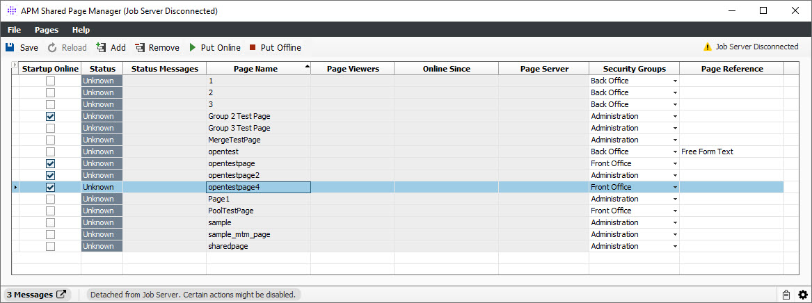

APM Shared Pages allows clients to have a centrally managed collection of pages that are always online and ready to view by end-users. Certain organizations manage the pages for their users for internal/external regulatory, resource limitation, or process optimization reasons. Pageserver operations are offloaded to the server side therefore eliminating typical processes on the local machine. This can alleviate the memory and CPU load in virtualized environments such as Citrix where the resources are limited and shared among a group of users.
Note: The feature name is APM_SHARED_PAGES. It has licensable feature data of Number of Pageservers. Default is 2. Please contact your account manager for additional information and reference documents.
The APM Shared Page Manager allows clients to add, remove, and manage their shared pages. There is an administration view – for administrators - and a read-only view – for general use, which are launched separately via the AFE services. This help topic addresses the administrative view.
There are several different ways to access this window. One method is to select Launch Available Services, then enter the name of the service.
1. From OpenLink Central, right-click anywhere on the header and select Launch Available Services. The Launch Available Services window displays.
2. Type APM Shared Page Manager in the Filter Service field, highlight APM Shared Page Manager in the Available Services panel, and click Launch. The following window displays:

Menu |
Item |
Description |
File |
Reload |
Reloads the screen contents from the server.. |
|
Save Window Location |
Select this to save the current window location. |
|
Delete Saved Window Location |
Select this to delete the saved window location. |
|
Launch Available Services (Ctrl+E) |
Select this button to view the Launch Available Services window. This window allows the user to launch a service, module or desktop in the system. |
|
Exit |
Closes the window. Any unsaved modifications will be lost. |
Pages |
Export Page Definition |
Exports the page definition loaded in the window. |
Help |
Help |
Displays the system Help files. |
|
About |
Opens the About window, which displays information about the system. |
This window contains the following icons:
Icon |
Description |
| Saves the configuration. | |
Reloads the screen contents from the server. |
|
| Adds new page(s) to the collection. User can multi-select a group of pages. | |
| Removes page(s) from the screen. User can multi-select a group of pages. The configuration must be saved for the removal to be applied. | |
Put page(s) online so that they can be viewed by the remote viewer. |
|
Put the page(s) offline. They will no longer be viewable by users. |